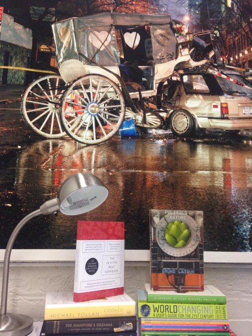
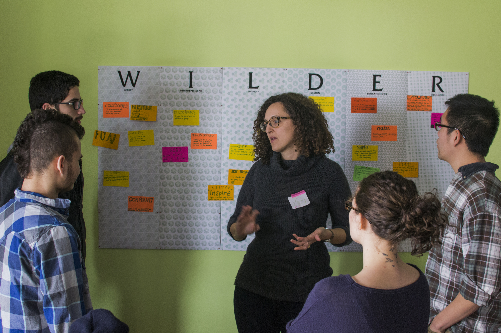
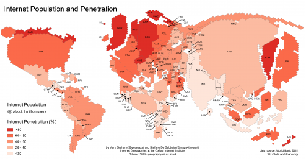
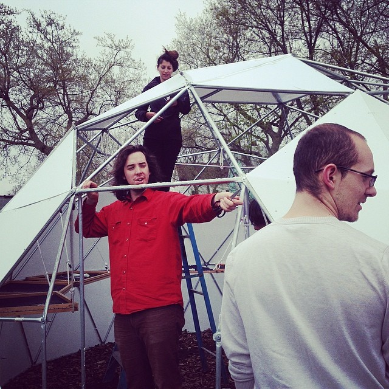
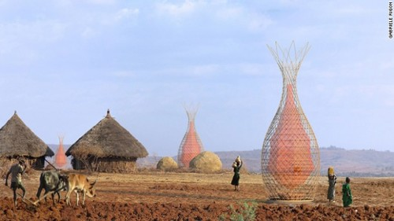
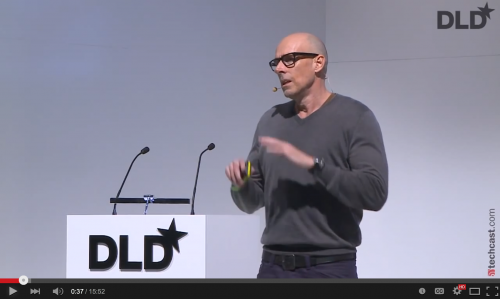
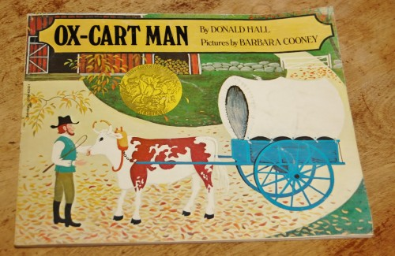

Castaways, Ethnotourism, the Game of Apocalypse
If you’ve ever wanted to languish on a desert island, your day may have finally arrived.
February 23, 2016
forum

Edible Ecologies Series: OS Fermentation Workshop
The artistic duo, EcoArtTech, join forces with Syracuse University professors, Evan Weissman and Edward Morris, to provide [...]
October 10, 2015
forum

Yellow Rose
A project to collect personal stories of Hurricane Sandy, the recovery and sense of community in the wake of the storm.
October, 2014
projects

MPEx Lab Underway! First Stop, Food
The Canary Project partnered with Syracuse University to launch a two year laboratory called Modern Primitive Exchange to pass-on [...]
September 18, 2015
forum

Goats with Spider Genes and Silk in Their Milk
Researchers from the University of Wyoming have developed a way to incorporate spiders’ silk-spinning genes into goats.
September 17, 2015
forum

WILDER broguht students from Syracuse University together with students from the local community to collaboratively build a hub [...]
May, 2014
projects

Elon Musk unveils Tesla batteries
Researchers from the University of Wyoming have developed a way to incorporate spiders’ silk-spinning genes into goats.
August 16, 2015
forum

Weaving a Home
“Weaving a home” reexamines the traditional architectural concept of tent shelters by creating a technical, structural fabric.
July 25, 2015
forum

The Internet as a Human Right
Should the Internet be considered a human right? Before you answer, think about all that you do on the Internet and think about [...]
July 22, 2015
forum

Biodiversity Workshops
A series of social interventions that worked with the public to investigate local biodiversity in all its forms.
January, 2015
projects

Wilder Workshops Build a Geodesic Dome Greenhouse
Learn how to build a geodesic dome greenhouse in a day.
resources

Dark Mountain: Cop Out or Truth?
This guy, Paul Kingsnorth, was a prominent activist. He said, “There is no way we are going to solve climate change.” Probably he is right.
June 30, 2015
forum

Arturo Vittori: Use CAD; Get Drinking Water. Totally MPEx!
Safe drinking water from condensation. Designed using CAD software; real implementation [...]
June 28, 2015
forum

NYU Stern’s Scott Galloway predicts the future
Researchers from the University of Wyoming have developed a way to incorporate spiders’ silk-spinning genes into goats.
June 28, 2015
forum

MPEx for Kids (Ox Cart Man)
Ox Cart Man, by Donald Hall with illustrations by Barabara Cooney [...]
June 28, 2015
forum

Our Favorite TED Talk (About Why TED Talks Suck).
June 28, 2015
forum

Researchers from the University of Wyoming have developed a way to incorporate spiders’ silk-spinning genes into goats.
June 28, 2015
resources

Robots Make 3D Bridges
Researchers from the University of Wyoming have developed a way to incorporate spiders’ silk-spinning genes into goats.
June 28, 2015
forum

Share your project with the MPEx community
Upload your own step-by-step instructions here.
June 28, 2015
share

How to Open a Can without a Can Opener
Researchers from the University of Wyoming have developed a way to incorporate spiders’ silk-spinning genes into goats.
June 28, 2015
forum

This Winter, if your car falls in the lake, keep it simple…
June 28, 2015
forum

Invisible Bike Helmet? Yes. Invisible Bike Helmet (for $500)
http://www.vimeo.com/43038579 Video from Hovding. [...]
June 28, 2015
forum

Joey Ruiter’s ‘Reboot Buggy’
Reboot Buggy from Baas Creative on Vimeo. At the heart of Joey Ruiter‘s new automobile project, Reboot Buggy, is an [...]
June 28, 2015
forum

Prepper Chic
This stylish jacket from French designer Marie-Elsa Batteux Flahault readies you for the apocalypse at any moment [...]
June 28, 2015
forum

Meat from a Test Tube? Why not?
Believe it or not “meat” can be manufactured in the laboratory. It works like this, according to “Cultured Beef,” a project run out of [...]
June 28, 2015
forum